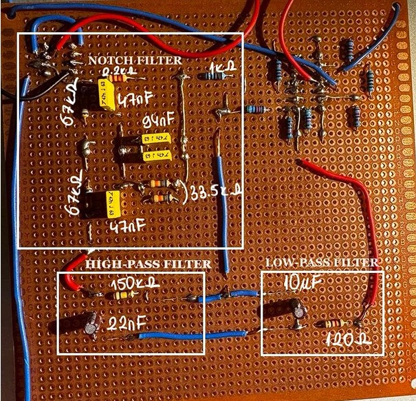
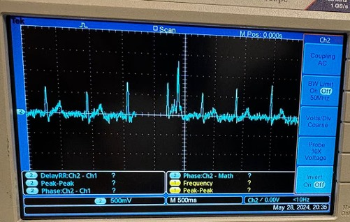

Project Overview
The objective of this project was to design an amplifier capable of amplifying ECG signals by at least 1000 times. The amplifier was designed for various biological signals, with a primary focus on ECG signals. The project involved three key phases: amplifier design, filter implementation, and testing.
Design Specifications
- Amplification: The circuit was designed to amplify ECG signals by a factor of 1000.
- Instrumentation Amplifier: LM348N op-amp was used for its low noise characteristics.
- Power Supply: Powered by two 9V batteries to avoid mains noise.
- Filters: Designed and implemented low-pass, high-pass, and notch filters to improve signal clarity and eliminate noise.
Key Components
- Instrumentation Amplifier: LM348N
- Power Supply: Two 9V batteries
- Resistors and capacitors for filter design
Filter Design
Various filters were designed and implemented to improve the clarity of the ECG signals. The filters aimed to remove high-frequency noise, eliminate DC offset, and reject 50Hz power line interference.
- Low-Pass Filter: Reduced high-frequency noise.
- High-Pass Filter: Removed DC offset.
- Notch Filter: Rejected 50Hz power line interference using a Twin-T configuration.
Results
- The amplifier successfully amplified the ECG signals by the required factor.
- High-frequency noise was significantly reduced using the low-pass filter.
- The high-pass filter effectively removed DC offset, while the notch filter eliminated 50Hz power line interference.
Project Images


Conclusion
This project successfully demonstrated the design and implementation of an ECG signal amplifier and filtering system. The design included effective use of an instrumentation amplifier and various filters to improve signal clarity and reduce noise.